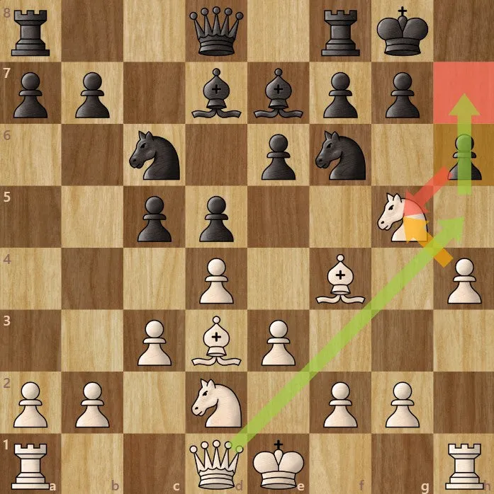

London System
♟️ Solid Structure
🛡️ Safe Defense
⚔️ Deadly Counterplay

The London System usually begins with:
1. d4 d5
2. Nf3 Nf6
3. Bf4
White develops pieces to solid squares while building a strong and
reliable setup against many different defenses.
This opening is known for simple development, safe king positions, and
consistent strategic plans throughout the game.
Many players choose the London System because it is easy to learn,
flexible, and effective at every level of chess.